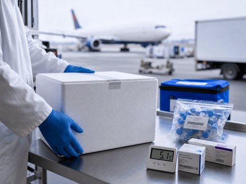
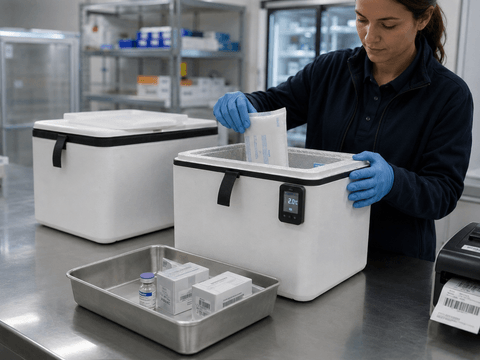
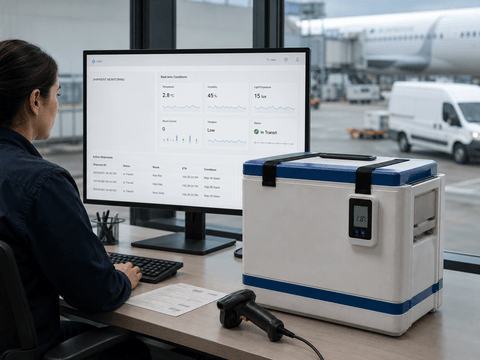
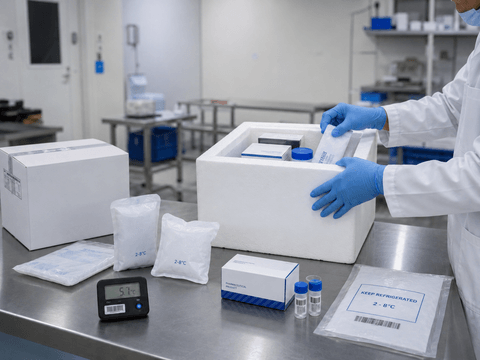
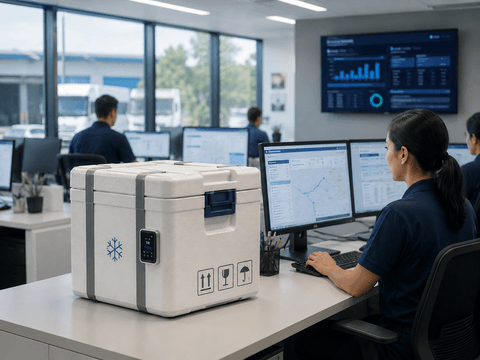

Door-to-Door Cold Chain
Pickup, route coordination, airport handling, road movement and final delivery support for sensitive healthcare shipments.
Pharma cold chain logistics
Zoom Solutions provides cold chain logistics for pharmaceuticals, healthcare cargo, clinical samples and temperature-sensitive shipments across the UAE, Bahrain and worldwide routes.
Cold chain expertise

Pharmaceutical and healthcare shipments require careful planning, controlled handling, temperature-qualified packaging, proactive monitoring and reliable delivery coordination.
Zoom Solutions supports customers with cold chain logistics for temperature-sensitive products, including pharma cargo, healthcare supplies, biological materials and clinical samples.
Our service combines air cargo, road freight, shipment planning, packaging support, collection, quality checks, live visibility and final delivery confirmation.
Cold chain capabilities
Each part of the cold chain is planned to protect product integrity and keep your team informed.
Pickup, route coordination, airport handling, road movement and final delivery support for sensitive healthcare shipments.
Flexible movement options for local, cross-border and international pharma logistics requirements.

Packaging preparation for refrigerated and controlled room temperature healthcare products.

Visibility for temperature, humidity, location, light, shock and vibration throughout the shipment journey.
Shipment process
Our cold chain workflow is structured to reduce risk, protect product quality and support clear communication.
Product type, temperature range, route, documents, pickup timing and delivery deadline are reviewed.
Air, road, packaging and monitoring requirements are selected based on shipment risk.
Shipments are collected using trained handling support and suitable temperature preparation.
Temperature is confirmed before packing, sealing, labeling and movement.
Shipment temperature, light, shock and location visibility can be maintained until delivery.
Delivery is coordinated with handover confirmation and proof of delivery.
Temperature ranges

For pharmaceutical products, clinical samples, vaccines and temperature-sensitive healthcare cargo.

For products that require controlled ambient conditions during local or international transit.

For sensitive products requiring product-specific temperature, route, packaging and monitoring planning.

Packaging support
Packaging is one of the most important parts of cold chain logistics. Zoom Solutions can support passive packaging preparation for healthcare shipments requiring stable temperature control.
Live visibility
Real-time visibility helps your team monitor shipment conditions, detect risk and maintain confidence during sensitive healthcare movements.

Transport modes
International and regional air cargo coordination for urgent and planned temperature-sensitive pharma shipments.
Local and cross-border road freight options for controlled healthcare logistics and last-mile delivery.
Quality and compliance
Healthcare cargo requires more control than general logistics. Our process focuses on planning, handling, packaging, monitoring, communication and delivery confirmation.
Who we support
Temperature-controlled movement for pharma products, samples and sensitive healthcare cargo.
Controlled logistics for medical products, patient-related samples and urgent healthcare movements.
Cold chain support for clinical samples, testing materials and biological substance shipments.
Specialized logistics for biological materials, cell and gene therapy and clinical research shipments.
FAQ
Clear answers for pharma, healthcare and life sciences teams planning temperature-sensitive shipments.
Zoom Solutions provides temperature-controlled logistics for pharma and healthcare shipments, including air cargo, road freight, packaging support, collection, monitoring and final delivery coordination.
Yes. Zoom Solutions supports refrigerated 2–8°C healthcare shipments using suitable cold chain planning, packaging support and monitoring.
Yes. Zoom Solutions supports controlled room temperature shipment requirements such as 2–25°C, depending on product type, route and packaging needs.
Yes. Shipments can be monitored for temperature, humidity, GPS location, light, shock and vibration until final delivery.
Request cold chain support
Share your origin, destination, product type, temperature range, pickup date and delivery deadline. Our Pharma Care team can recommend the right route, packaging and monitoring setup.